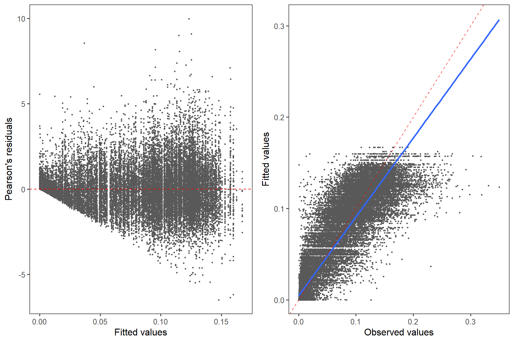
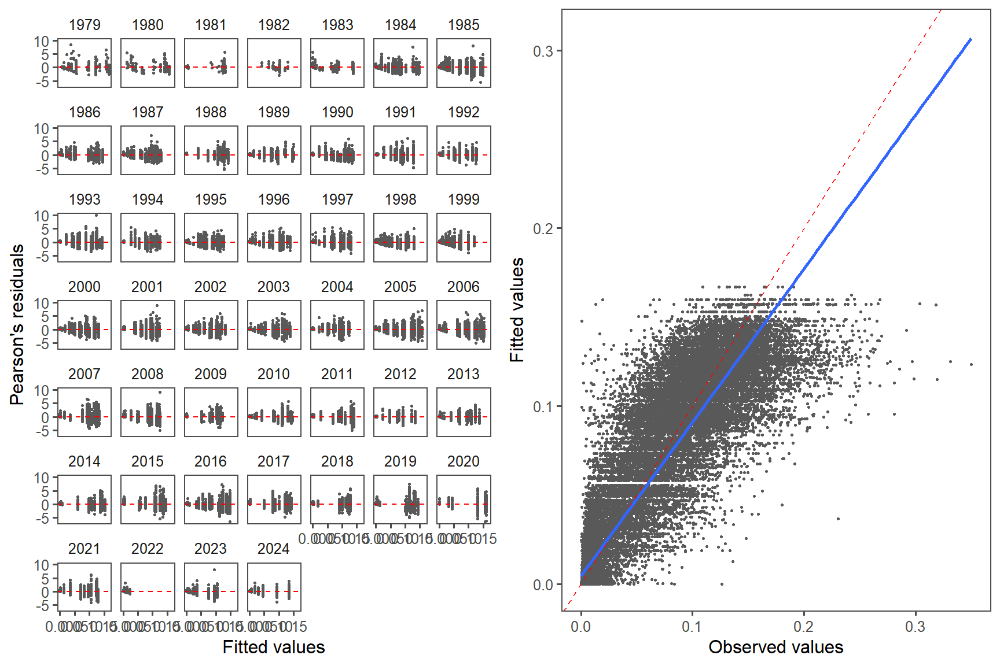

Spawning
2024-10-21
# SET-UP## Warning: le package 'knitr' a été compilé avec la version R 4.3.3##### my packages ################################################################################
## CRAN
cran.packages <- c('tidyverse','boot','magrittr','ggpmisc','ggpubr','ggthemes','mgcv',
'fields', 'inlabru', 'sf', 'PresenceAbsence', 'verification', 'raster',
'scales', 'nlme','nls.multstart', 'stringr', 'ggforce')
install.this <- cran.packages[!(cran.packages %in% utils::installed.packages()[,"Package"])]
if(length(install.this)>=1) install.packages(install.this)
dummy <- lapply(cran.packages, require, character.only = TRUE)
## github
git.packages <- c('catchR','DFOdata','CCAM', 'INLA')
install.this <- git.packages[!(git.packages %in% utils::installed.packages()[,"Package"])]
if('catchR' %in% install.this) devtools::install_github("iml-assess/catchR@eli_parallel")
if('DFOdata' %in% install.this) devtools::install_github("im-assess/DFOdata")
if('CCAM' %in% install.this) devtools::install_github("elisvb/CCAM")
if('INLA' %in% install.this)install.packages("INLA",repos=c(getOption("repos"),INLA="https://inla.r-inla-download.org/R/stable"), dep=TRUE)
dummy <- lapply(git.packages, require, character.only = TRUE)
##### source R directory ############################################################################
#invisible(sapply(list.files(pattern="[.]R$", path="R/", full.names=TRUE), source))
##### my ggplot theme ################################################################################
theme_set(theme_mackerel()) # theme_mackerel from catchR
update_geom_defaults("line", list(size = 1)) # no idea why somethimes I get fat lines otherwise
##### passwords databases #############################################################################
source("bdOracle.R")
source(paste0("R/",my.year,"/utils/basemap.R")) #if error "plot new has not been call", restart R, package compatibility issues
source(paste0("R/",my.year,"/utils/mackerel_fun_incubation.R")) # Mackerel incubation .
source(paste0("R/",my.year,"/utils/spatial_projections.R"))#
source(paste0("R/",my.year,"/utils/extract_biochem.R"))
source(paste0("R/",my.year,"/utils/extract_T0_10.R"))
source(paste0("R/",my.year,"/INLA/Mesh.R"))
source(paste0("R/",my.year,"/INLA/INLA_ZAG_covar_Stations.R"))
source(paste0("R/",my.year,"/INLA/INLA_ZAG_covar_Stations_CV.R"))
source(paste0("R/",my.year,"/utils/nlme_boot.R"))
source(paste0("R/",my.year,"/INLA/INLA_tw_covar_Stations.R"))
source(paste0("R/",my.year,"/INLA/INLA_tw_covar_Stations_CV.R"))
source(paste0('R/',my.year,'/INLA/plotSpatialFieldCL.R'))
source(paste0('R/',my.year,'/INLA/plotSmoother.R'))
source(paste0('R/',my.year,'/INLA/model_validation.R'))
source(paste0('R/',my.year,'/INLA/get_prediction_grid.R'))
source(paste0('R/biochem/PL_Get_SampleID_Batch.R'))
source(paste0('R/biochem/PL_Get_Counts_Batch.R'))
source(paste0('R/biochem/PL_Read_Filter.R'))
source(paste0('R/biochem/PL_Taxonomic_Grouping.R'))
log10p1_trans = function() scales::trans_new("log10p1", transform=function(x) log10(x+1), inverse=function(x) (10^x)-1)#inverse function is necessary for legend
#source(paste0("R/",year_to_report,"/INLA/getvar.R")) # needs to be retoughtnew=T
N=100
load(file=paste0("data/",my.year,"/DEP.RData"))
load(file=paste0("data/",my.year,"/eggt1.RData"))
dat=eggt11 Read
#prop_spawn(year,year=year, dat = egg, cv = T) # dat is used to calculate median date and in split with trajet.
date.med <- eggt1 %>% filter(year !=1979) %>%
ungroup() %>%
group_by(year) %>%
dplyr::summarize(
date.med = round(median(doy, na.rm = T)),
mindoy = min(doy, na.rm = T),
maxdoy = max(doy, na.rm = T)
)
date.med <- date.med %>% mutate(date.med = ifelse(year == 1979, 166, date.med)) # from Ouellet et al. 1987
date.med <- as.data.frame(date.med)
bio <- get.bio(species = "maquereau", user = my.env$bio.username, password = my.env$bio.password)
bio <- bio %>% mutate(doy = as.numeric(format(as.Date(paste(year, month, day, sep = "/"), format = "%Y/%m/%d"), format = "%j"))) %>%
dplyr::filter(
!is.na(weight), !is.na(wgonad), !is.na(doy),
weight > 0, weight > wgonad, matur != 0, nafo %in% c("4T", "4V", "4W")
)
bio %<>% mutate(gsi = (wgonad / weight) * 100)
#remove outliers
df <- bio %>%
dplyr::filter(!is.na(gsi), matur > 4, year > 1978, !(gsi > 5 & doy > 250), !(gsi > 10 & doy > 200 & year %in% c(1994, 1999, 2018, 2019, 2020)), !(year == 1999 & matur > 6 & nafo == "4V"), !(nafo!="4T" & matur > 6), !(nafo!="4T" & matur>6 & month >7), length.frozen > 0.2, weight > 0.03, gsi < 40) %>%
group_by(agef) %>% filter(weight>quantile(weight,0.0001), weight<quantile(weight,0.9999))%>%
arrange(year)
df <- df %>%
arrange(year) %>%
mutate(year = as.numeric(as.character(year))) %>% filter(!is.na(gsi), !is.na(doy), !is.na(year)) %>% mutate(maturcat = ifelse(!is.na(matur) & matur == 6, "6", ifelse(is.na(matur), "other", "other"))) %>% ungroup()
df<- df %>% mutate(gsi=gsi/100)1.1 CHECKS
1.1.1 Check for outliers
df %>% filter(year %in% year_to_plot) %>% ggplot(aes(x=doy, y=gsi)) +geom_point(aes(col=maturcat)) + facet_wrap(~year) + scale_color_manual(values = c("green3", "grey")) 
1.1.2 Model
#evaluate starting values
if(new){
start.val <- nls.multstart::nls_multstart(gsi ~ SSlogis(doy, Asym, xmid, scal),
data = df,
start_lower = c(Asym =0, xmid = min(df$doy), scal = -100),
start_upper = c(Asym = 1, xmid = max(df$doy), scal = 100),
iter = 500,
supp_errors = "Y"
)
nlme.fixAR <- nlme(gsi ~ SSlogis(doy, Asym, xmid, scal),
data = df,
fixed = Asym + xmid + scal ~ 1,
start = coefficients(start.val),
correlation = corAR1(),
random = Asym + xmid + scal ~ 1 | year
)
nlme_coefAR = as_tibble(coef(nlme.fixAR), rownames = 'year')
#keep starting values in case of needed for update
#save(nlme.fixAR,start.val,df, nlme_coefAR, file = paste0("results/", my.year,"/spawning/nlmeAR", my.year,".RData"))
}# else{#load(paste0("results/", my.year,"/spawning/nlmeAR", my.year,".RData"))}
predtimes <- expand_grid(year = unique(df$year), doy = seq(0.5, 364.5)) # doy aligned to calculate probability at doy
nlme.fixpredsAR1 <- predtimes %>%
mutate(fitted =predict(nlme.fixAR, newdata = predtimes,interval = 'confidence')) %>%
group_by(year) %>%
mutate(
slope = c(diff(fitted, lag = 1), NA),
prob = slope / sum(slope, na.rm = T)
) %>%
filter(!is.na(prob)) %>%
mutate(
probcum0025 = cumsum(prob),
#probcum9725 = rev(cumsum(rev(prob))),
doy = ceiling(doy)
) # get back the real doy1.1.2.1 Check
valid<- data.frame(resid=residuals(nlme.fixAR , type="pearson"), mu=fitted(nlme.fixAR), obs=df$gsi, year=df$year)
h<- ggplot(valid, aes(x=mu, y=resid))+geom_point(col="grey35", size=0.5) +theme_few() + geom_hline(yintercept=0, col="red", lty=2)
f<- ggplot(valid, aes(x=df$gsi, y=mu))+geom_point(col="grey35", size=0.5)+theme_few() +geom_abline(slope=1, intercept=0, col="red", lty=2)+ geom_smooth(method="lm")
hEN <- h+ ylab("Pearson's residuals") + xlab("Fitted values")
fEN <- f+ ylab("Fitted values") + xlab("Observed values")
ggarrange(hEN, fEN, ncol=2)
h<- ggplot(valid, aes(x=mu, y=resid))+geom_point(col="grey35", size=0.5) +theme_few() + facet_wrap( ~ year) +geom_hline(yintercept=0, col="red", lty=2)
f<- ggplot(valid, aes(x=df$gsi, y=mu))+geom_point(col="grey35", size=0.5)+theme_few() + facet_wrap( ~ year) +geom_abline(slope=1, intercept=0, col="red", lty=2)+ geom_smooth(method="lm")
hEN <- h+ ylab("Pearson's residuals") + xlab("Fitted values")
ggarrange(hEN, fEN, ncol=2)